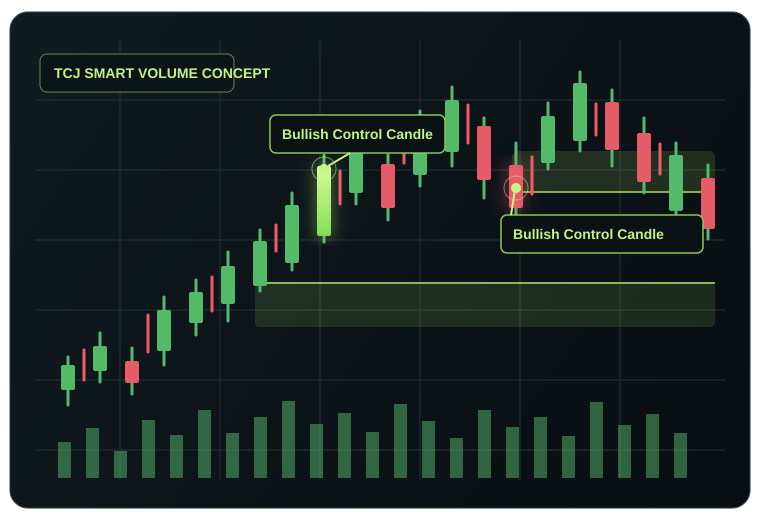
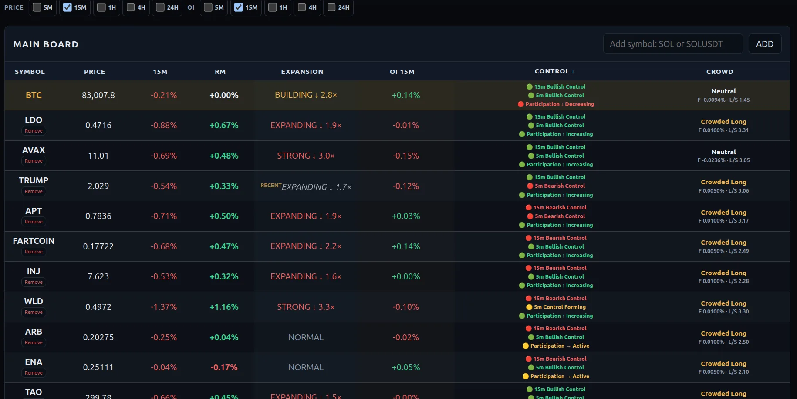

Levels traders watch
ICT, SMC and related approaches may use order blocks, horizontal support and resistance, rays, price ranges, fair value gaps and other chart levels to identify areas of interest.
Find active crypto markets with Zero Scanner. Use Control Candlesticks to read buying and selling pressure and identify price areas worth watching.
Free to explore · No account required

Scan 800+ Bybit USDT perpetual markets for price, volume, open interest and Control Candles. Quickly find coins with strong market participation.

TCJ SVC identifies Control Candlesticks when unusually strong market pressure stands out. Each candlestick’s price area becomes a reference for watching how price responds.
Explore Control CandlesticksDifferent chart methods offer different perspectives. TCJ SVC focuses on identifying significant market pressure through defined rules.
ICT, SMC and related approaches may use order blocks, horizontal support and resistance, rays, price ranges, fair value gaps and other chart levels to identify areas of interest.
Control Candlesticks use defined criteria to identify activity that stands out. Their price area becomes a reference for observing what price does next.
Understand the methodUse Zero Scanner to narrow your search.
Watch how price behaves around Control areas.
Define your entry, invalidation and target.
A clearer search.
A more deliberate trading decision.